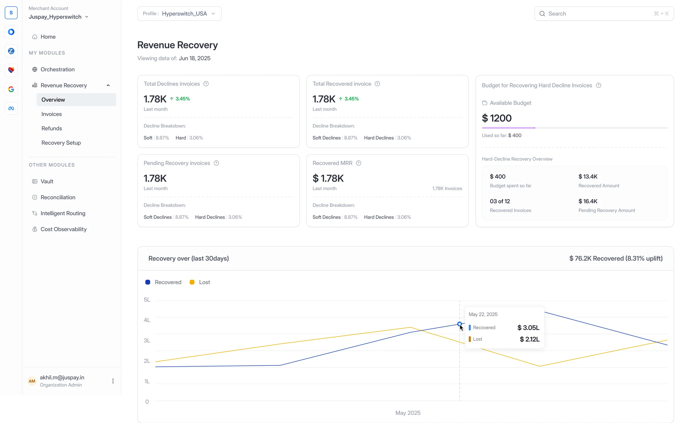
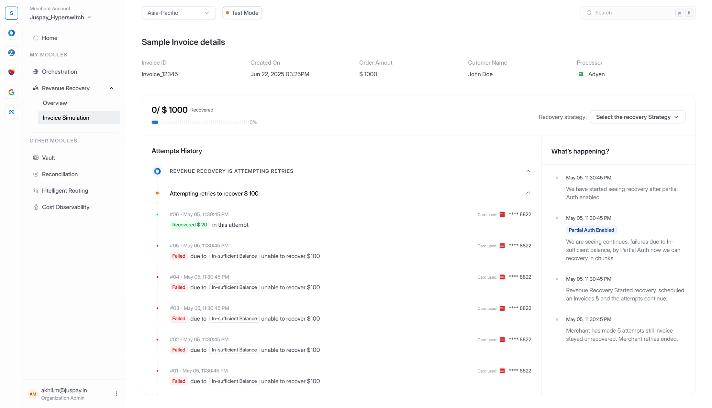
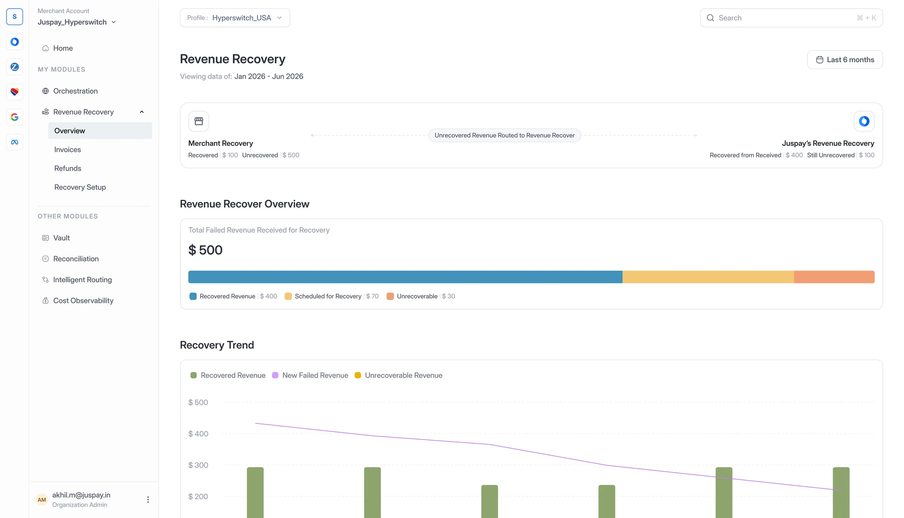
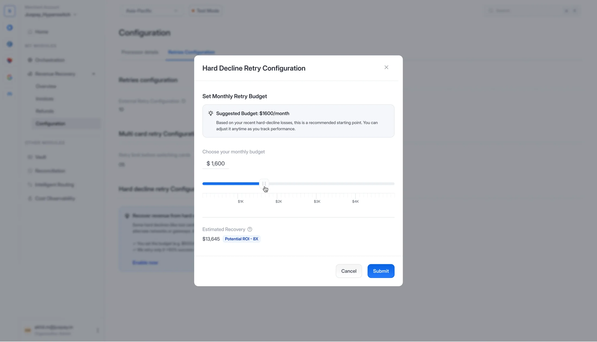
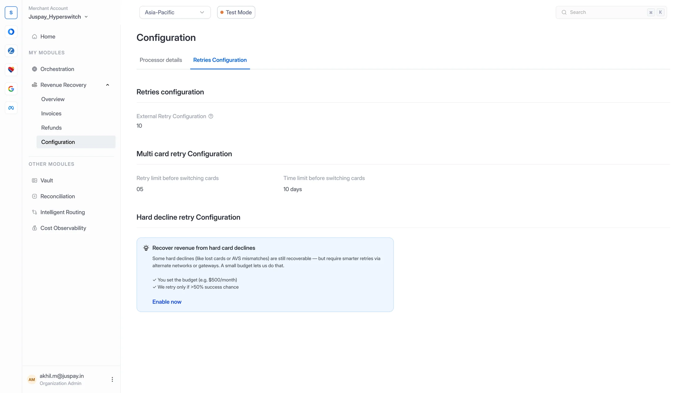
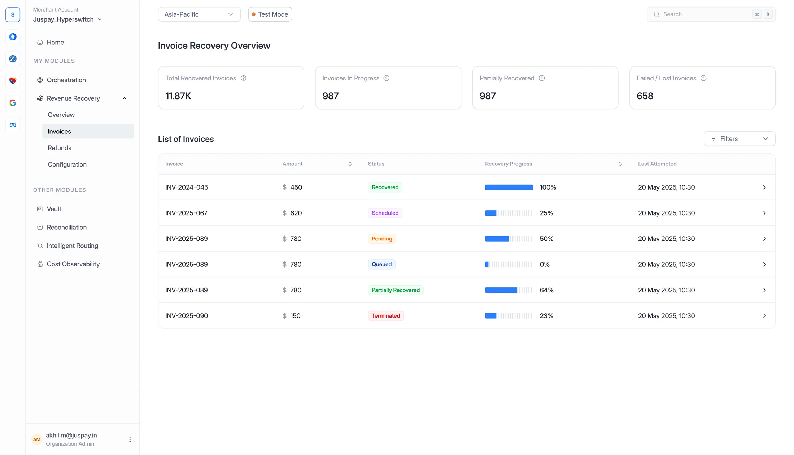
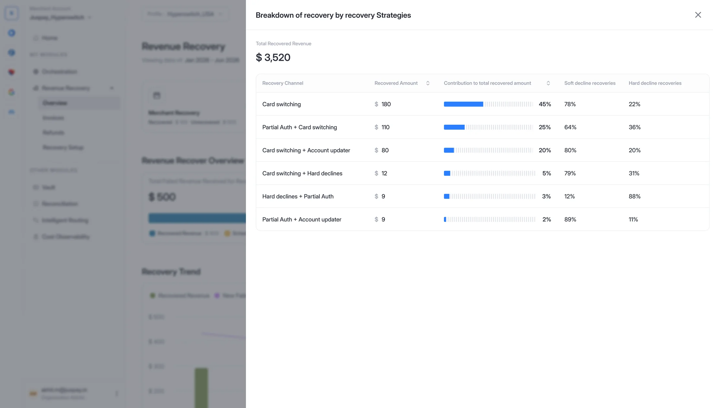
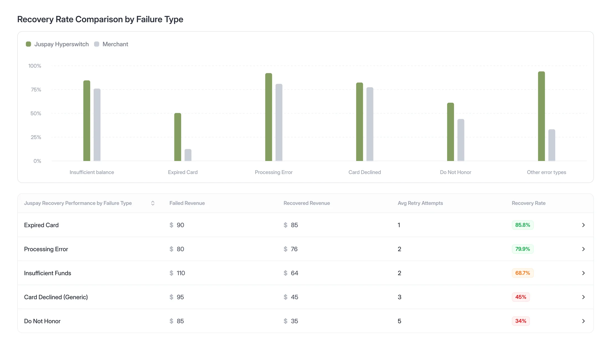
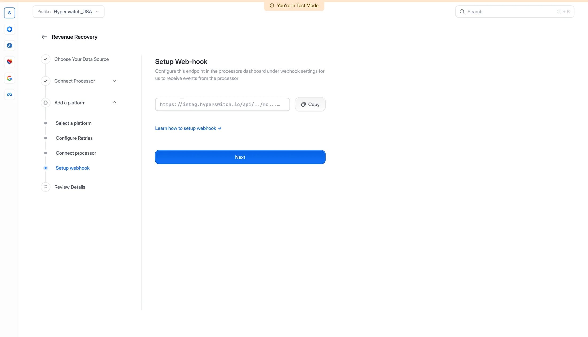

Subscription businesses lose revenue every time a renewal payment fails. Revenue Recovery takes over those failed invoices and decides, invoice by invoice, when to retry, which card to use and which strategy gives it the best chance.
A few moments from what we built, not the full story.


What's happening?It explains itself.
Every invoice keeps a running account in plain words: five declines for insufficient balance, so it switches on partial auth and starts recovering in chunks.

Unrecovered revenue, routed inIt starts where the merchant stops.
Invoices the merchant's own retries couldn't save are handed over, and every dollar is accounted for: recovered, scheduled, or out of reach.

Expected return, before committingSpend to recover.
Some hard declines can still be won back on other networks or gateways, at a cost. Merchants set a monthly budget, starting from a suggestion based on their recent losses, and see the expected return before they commit.

Only when it's likely to workGuardrails, not guesswork.
It retries hard declines only when success looks likely, and moves on to the customer's next card after five tries or ten days.

Status and progress, per invoiceA status for every invoice.
Six states and a progress bar, so a finance team can read thousands of invoices at a glance and open any one to see its story.
The status language

Strategies, combinedStrategies that stack.
Card switching, partial auth, account updater and hard-decline retries combine per invoice, and every recovered dollar is traced back to the mix that won it.

Expired cardsMeasured against the merchant.
Recovery is shown side by side with the merchant's own rate for each type of failure, so the value is never a claim, it's a comparison.

Five stepsLive in five steps.
Pick a data source, connect the processor, configure retries, add a webhook, review. The engine takes it from there.